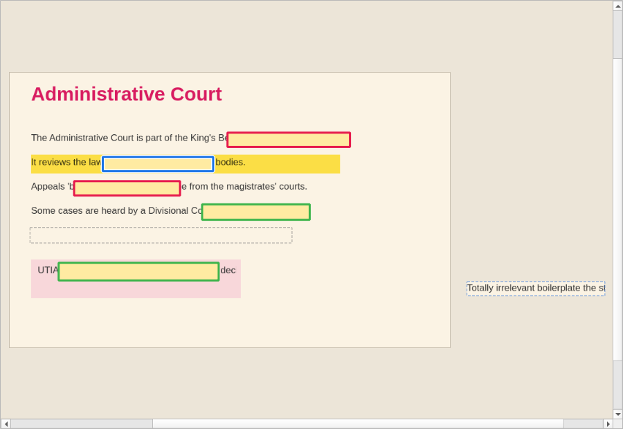
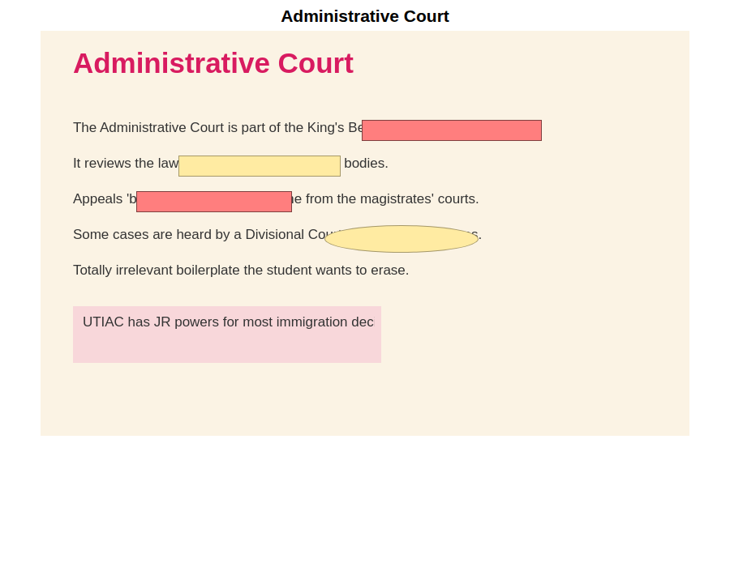
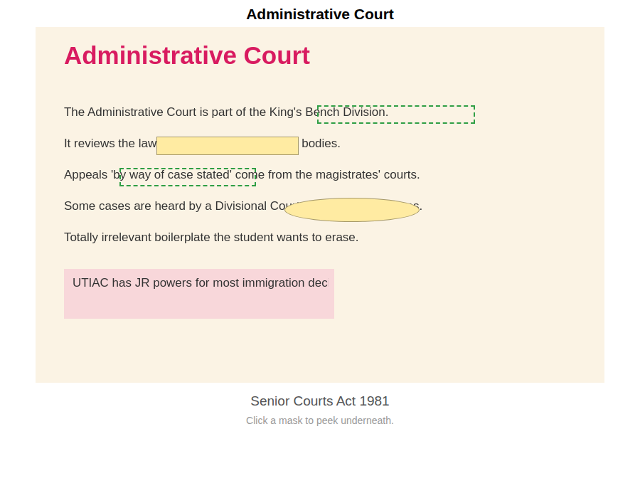
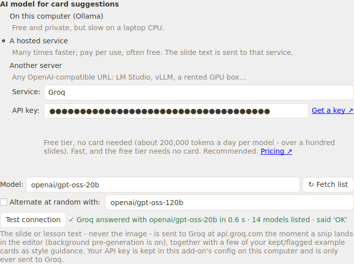

Snip a slide, box the facts, and let a free open-source AI draft the flashcards.
Snip Occlusion is an Anki add-on for studying from slide decks. You take a screenshot of a slide, it appears in the editor, you draw boxes over the facts you need to recall, and one click makes the cards. Since version 0.28 it can also read the slide's text and draft question-and-answer cards for you, using an open-source AI that runs either on a free hosted service or on your own computer.
snip_occlusion.ankiaddon from the project's Releases page at github.com/davidfitzgerald1579-boop/Anki-tool/releases, then use Tools → Add-ons → Install from file… and pick that file.
The editor: yellow masks (a group shares a bold outline colour), a selected box, a grey cover-up box that erased a line of text, and a snip patch parked beside the slide.

Question side: the target group in red, everything else masked.

Answer side: the target revealed; other masks can be clicked to peek.
The add-on can read a snip's text and draft question-and-answer cards. The quickest way to run the AI is a hosted service: the same open-source model runs on that company's computers instead of your laptop, so drafts arrive in a second or two. Groq is the recommended first choice — no card details, a free daily allowance that covers over a hundred slides, and very fast. The add-on itself stays free; you never pay us anything.
gsk_. Keep it private, like a password.
A successful test: ✓ Groq answered with openai/gpt-oss-20b in 0.6 s. The note underneath spells out exactly what is sent where.
OpenRouter, Together AI, Hugging Face, Ollama Cloud, Mistral, Fireworks, DeepInfra and Cerebras are offered the same way: pick the service, press Get a key ↗, paste, test. ↻ Fetch list shows every model the service currently offers; bigger models such as gpt-oss-120b write noticeably better cards and are still fast.
Skip this section if you set up Groq. Choose it instead if you want nothing to leave your machine: the same open-source model runs locally through Ollama, free, with no account and no key. The trade-off is speed — a laptop CPU takes a minute or more per slide (a computer with a gaming GPU, or an Apple-silicon Mac, takes a few seconds).
ollama pull llama3.1:8b
ollama pull llama3.2:3b instead (2 GB, faster, slightly weaker cards).| What you see | What it means and what to do |
|---|---|
| "…edge network (Cloudflare) blocked the request… error code 1010" | Your copy of the add-on is older than 0.28.1, which identifies itself properly to Groq's network. Update the add-on. If it persists, a VPN or shared network is the usual cause — try another connection. |
| "…rejected the API key (HTTP 401)" | The key is wrong or was deleted. Make a new one at the service's key page (the Get a key ↗ link in Settings), paste it, and Test connection again. |
| "…rate-limiting you (HTTP 429)" | You have hit the free tier's per-minute or per-day allowance. Wait a little, pick a different model (each has its own allowance), or switch service. |
| "…could not find that endpoint or model (HTTP 404)" | The model name has changed — services retire models now and then. Press ↻ Fetch list in Settings and choose a current one. |
| "Could not reach the Ollama server…" | Ollama is not running or the model is not downloaded. Start Ollama, run ollama pull llama3.1:8b, then press Test connection. |
| "…is not downloaded yet. In a terminal run: ollama pull …" | Exactly that: run the command shown, wait for the download, try again. |
| "The local model took too long to reply" | Normal on the first request after Ollama starts. Try again; if it keeps happening use a smaller model, or a hosted service (section 3). |
| Suggestions say "no snip text" | The slide's text could not be read. On Windows the built-in OCR is used; on Mac and Linux install Tesseract (brew install tesseract / apt install tesseract-ocr) and restart Anki. |
| The Settings window's Save button is off-screen | Update to 0.28.2 or later: the window now scrolls and Save stays visible. F11 toggles full screen. |
Still stuck? Report it on GitHub with the exact message: github.com/davidfitzgerald1579-boop/Anki-tool/issues. Reviews on AnkiWeb can't be replied to, so GitHub is the place where you'll get an answer.
| Keys | Action |
|---|---|
| S / R / H / C / P | Select / Rectangle mask / Highlighter / Cover-up (erase text) / Snip patch |
| Double-click a word | Occlude exactly that word (highlight it in the Highlighter tool, erase it in the Cover-up tool) |
| Shift+click | Add or remove a box from the selection — never moves it |
| G / U | Group / ungroup the selection |
| Drag a box · Ctrl+drag | Move only that box · move the whole selection |
| Ctrl+C / Ctrl+V | Copy selected boxes / paste them beside the originals |
| T | See-through mode: outlines only, text visible underneath |
| Ctrl+Z / Ctrl+Y | Undo / redo |
| Ctrl+wheel · F · F11 | Zoom · fit to window · full screen |
| Ctrl+Enter | Add cards |
| Ctrl+Shift+T | Write a plain text card in your own words |
| Delete / Shift+Delete while reviewing | Delete this card / delete every card made from the same slide (Ctrl+Z undoes) |